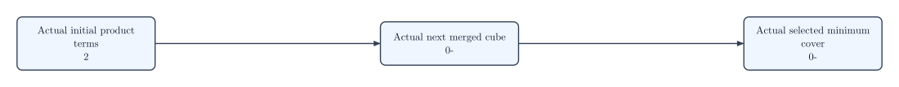
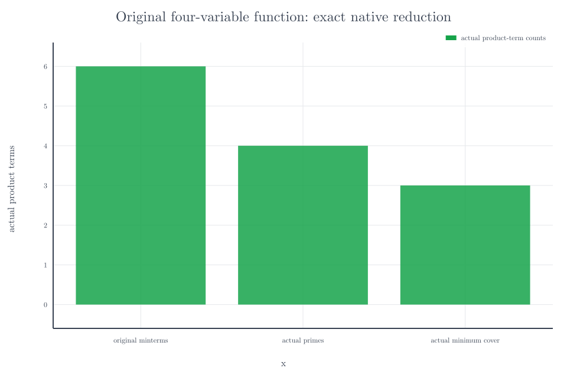
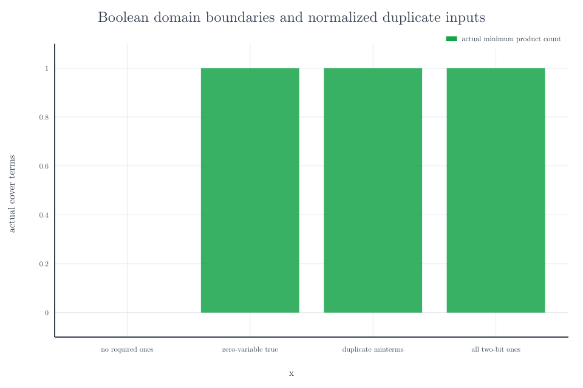
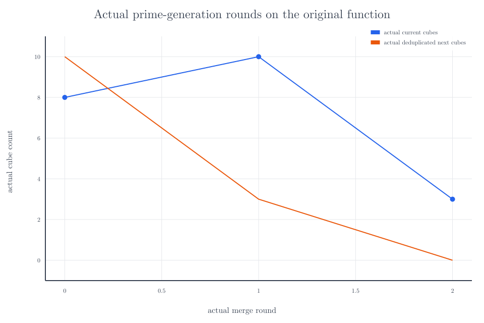

Quine-McCluskey: actual prime rounds, coverage chart and exact minimum cover
Abstract
A Boolean truth table can require many minterms even when a short sum of products exists. Quine-McCluskey merges adjacent cubes into prime implicants, finds essential primes and solves the remaining cover exactly. Actual native merge rounds and the coverage chart now explain the reduction. The original four-variable function and two dont-cares remain, alongside zero-variable and duplicate-domain controls.
Mechanism and mathematical scope
Represent a product by fixed bits and a dash mask. Terms with equal masks and exactly one differing fixed bit merge by replacing that bit with a dash. The merged cube is precisely their union, so it covers only required or permitted assignments. A term never merged in its round is prime; iterating exhausts all such cubes.
A chart column with one covering prime forces an essential prime. After essentials cover their columns, native Petrick expansion enumerates irredundant residual products and selects minimum cardinality. Among those covers the producer minimizes total fixed literals. This gives a lexicographic objective: fewest product terms first, then fewest literals, not unrestricted literal minimization. The worst-case search is exponential; independent term, pair, chart and covering budgets prevent treating small examples as a scalable guarantee.
A tiny actual producing history
The table and native concept diagram read the same producing execution. Every block below is a complete editable C++ program.
#include <dm/dm.hpp>
int main() {
namespace a = dm::algorithms;
namespace g = dm::graphics;
std::filesystem::create_directories("build");
auto t = a::quine_mccluskey_trace(2, {0, 1});
const auto &s = t.rounds[0];
std::print("\n| actual round | input terms | actual next terms | actual new primes |\n| ---: | ---: | " "---: | ---: |\n");
for (std::size_t i = 0; i < t.rounds.size(); ++i)
std::print("| {} | {} | {} | {} |\n", i, t.rounds[i].terms.size(),
t.rounds[i].next.size(), t.rounds[i].primes.size());
g::Diagram d;
d.node("n0", {0, 0},
std::format("Actual initial product terms\n{}", s.terms.size()));
d.node("n1", {10, 0},
std::format("Actual next merged cube\n{}",
a::implicant_to_string(s.next[0], 2)));
d.node("n2", {20, 0},
std::format("Actual selected minimum cover\n{}",
a::implicant_to_string(t.result.minimal_cover[0], 2)));
d.edge("n0", "n1").edge("n1", "n2");
d.save_svg("build/quine_mccluskey_tiny.svg");
}| actual round | input terms | actual next terms | actual new primes |
|---|---|---|---|
| 0 | 2 | 1 | 0 |
| 1 | 1 | 0 | 1 |

The retained original experiment
#include <dm/dm.hpp>
int main() {
namespace a = dm::algorithms;
namespace g = dm::graphics;
std::filesystem::create_directories("build");
auto t = a::quine_mccluskey_trace(4, {4, 8, 10, 11, 12, 15}, {9, 14});
std::print("\n| actual prime id | actual cube | essential | selected minimum cover |\n| ---: | --- | " "--- | --- |\n");
for (std::size_t i = 0; i < t.result.prime_implicants.size(); ++i) {
auto p = t.result.prime_implicants[i];
std::print("| {} | {} | {} | {} |\n", i, a::implicant_to_string(p, 4),
std::find(t.result.essential.begin(),
t.result.essential.end(), p) !=
t.result.essential.end(),
std::find(t.result.minimal_cover.begin(),
t.result.minimal_cover.end(), p) !=
t.result.minimal_cover.end());
}
std::print("\n| actual required minterm | actual covering prime ids |\n| ---: | --- |\n");
for (std::size_t i = 0; i < t.minterms.size(); ++i)
std::print("| {} | `{}` |\n", t.minterms[i], t.chart[i]);
auto p =
g::RPlot::barplot({double(t.minterms.size()),
double(t.result.prime_implicants.size()),
double(t.result.minimal_cover.size())},
{"original minterms", "actual primes",
"actual minimum cover"}, "actual product-term counts");
p.title("Original four-variable function: exact native reduction").y_label(
"actual product terms");
p.save_svg("build/quine_mccluskey_original.svg");
}| actual prime id | actual cube | essential | selected minimum cover |
|---|---|---|---|
| 0 | -100 | true | true |
| 1 | 10-- | false | true |
| 2 | 1--0 | false | false |
| 3 | 1-1- | true | true |
| actual required minterm | actual covering prime ids |
|---|---|
| 4 | [0] |
| 8 | [1, 2] |
| 10 | [1, 2, 3] |
| 11 | [1, 3] |
| 12 | [0, 2] |
| 15 | [3] |

Explicit controls
#include <dm/dm.hpp>
int main() {
namespace a = dm::algorithms;
namespace g = dm::graphics;
std::filesystem::create_directories("build");
std::vector<double> counts;
std::vector<std::string> labels{"no required ones", "zero-variable true",
"duplicate minterms", "all two-bit ones"};
std::vector<a::QuineMcCluskeyRun> cases{a::quine_mccluskey_run(2, {}),
a::quine_mccluskey_run(0, {0}),
a::quine_mccluskey_run(2,
{0, 0, 1, 1}),
a::quine_mccluskey_run(2,
{0, 1, 2, 3})};
std::print("\n| actual control | normalized required terms | actual minimum cover size |\n| --- | ---: " "| ---: |\n");
for (std::size_t i = 0; i < cases.size(); ++i) {
counts.push_back(cases[i].result.minimal_cover.size());
std::print("| {} | {} | {} |\n", labels[i], cases[i].minterms.size(),
cases[i].result.minimal_cover.size());
}
bool n = false, domain = false;
try {
a::quine_mccluskey(-1, {});
} catch (const std::invalid_argument &) {
n = true;
}
try {
a::quine_mccluskey(2, {4});
} catch (const std::invalid_argument &) {
domain = true;
}
std::print("Invalid variable count rejected: {}; out-of-domain minterm rejected: {}.\n",
n, domain);
auto p = g::RPlot::barplot(counts, labels, "actual minimum product count");
p.title("Boolean domain boundaries and normalized duplicate inputs").y_label("actual cover terms");
p.save_svg("build/quine_mccluskey_controls.svg");
}| actual control | normalized required terms | actual minimum cover size |
|---|---|---|
| no required ones | 0 | 0 |
| zero-variable true | 1 | 1 |
| duplicate minterms | 2 | 1 |
| all two-bit ones | 4 | 1 |
Invalid variable count rejected: true; out-of-domain minterm rejected: true.

Actual selected work and sensitivity
#include <dm/dm.hpp>
int main() {
namespace a = dm::algorithms;
namespace g = dm::graphics;
std::filesystem::create_directories("build");
std::vector<double> x, y, z;
auto t = a::quine_mccluskey_trace(4, {4, 8, 10, 11, 12, 15}, {9, 14});
std::print("\n| actual round | actual terms before | actual terms next | actual newly prime |\n| ---: | " "---: | ---: | ---: |\n");
for (std::size_t i = 0; i < t.rounds.size(); ++i) {
x.push_back(i);
y.push_back(t.rounds[i].terms.size());
z.push_back(t.rounds[i].next.size());
std::print("| {} | {} | {} | {} |\n", i, t.rounds[i].terms.size(),
t.rounds[i].next.size(), t.rounds[i].primes.size());
}
std::print("Actual pair tests: {}; successful pair merges including duplicates: {}; residual Petrick " "generated products: {}.\n",
t.pair_tests, t.merges, t.covering.generated);
auto p = g::RPlot::create();
p.lines(x, y, "actual current cubes", {37, 99, 235}).lines(
x, z, "actual deduplicated next cubes", {234, 88, 12}).points(
x, y, {37, 99, 235}, 5).title("Actual prime-generation rounds on the original function").x_label("actual merge round").y_label("actual cube count");
p.save_svg("build/quine_mccluskey_work.svg");
}| actual round | actual terms before | actual terms next | actual newly prime |
|---|---|---|---|
| 0 | 8 | 10 | 0 |
| 1 | 10 | 3 | 1 |
| 2 | 3 | 0 | 3 |
Actual pair tests: 76; successful pair merges including duplicates: 16; residual Petrick generated products: 2.

API and interpretation
Dont-cares may help form a prime but need not be covered. Required/optional duplicates normalize, and overlapping assignments remain required. The hard representable variable count is0..32, avoiding shifts by32; the default policy allows16. The zero-variable true function has one empty-literal product, whereas an empty required set has an empty cover. Only truth assignments in the declared domain are accepted. The report prints cube strings and actual chart ids; no report-local minimization or covering search is used.
Reusable producers, fixtures and histories live in the canonical C++ library. Captured records own their values and do not come from a separate report replay. Selected counters and record/scalar policies are specified at their API boundaries; they are not peak-byte or wall-time budgets. Synthetic structural inputs are controlled fixtures for these mechanisms.
References
- Quine, The Problem of Simplifying Truth Functions (1952)
- McCluskey, Minimization of Boolean Functions (1956)
Verified in the shared ten-document batch: 108 scoped native cases (22 new plus86 existing; one unchanged Rayleigh failure baseline-confirmed and carried to batch314–323);22 directly instrumented ASan/UBSan cases;91 executable public examples;367/367 full-file definitions plus17/17 common-sampler/engine definitions;10 hovers;32478 independent records/106910 checks;frozen compatibility across all ten families;12 checkout/installed standalone headers and linked consumer;40 executed programs and40 inspected figures with both exports. Legacy retirement follows the completed validation gates.